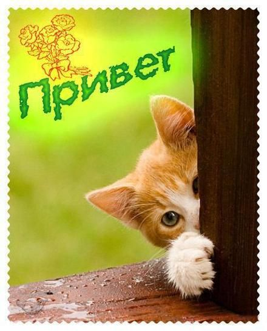

Hello
KOTANbI

А кто такие кошки?
Ко́шка (лат. Felis catus) — домашнее животное
, одно из наиболее популярных (наряду с собакой)
«животных-компаньонов»
Котики бывают:
- Британская короткошерстная
- Бирманская кошка (Священная Бирма)
- Бенгальская кошка
- Абиссинская кошка
- Невская маскарадная кошка
Нажми СЮДА!
На самую главную!